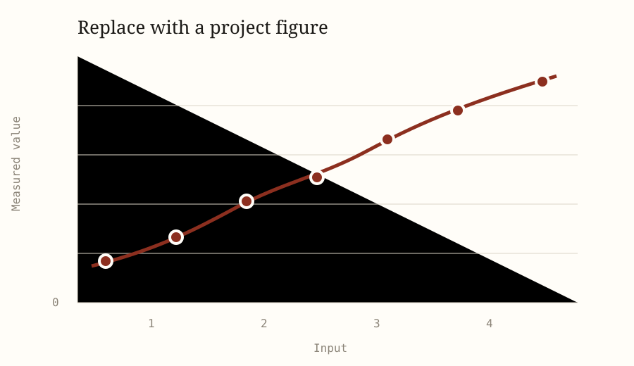

Day 13
Tue 28 Jul 2026Completed the primary analysis and reviewed its generated artifacts. The baseline result uses 128 records and returns a primary estimate of 0.84 ± 0.03.

Checked the main result against the available reference evidence and recorded the remaining discrepancies that require follow-up.
-
A1
The selected inputs are representative of the population addressed by the research question.
-
A2
The primary metric captures the outcome the researcher intends to measure.
-
A3
The baseline configuration is an appropriate reference for interpreting the result.
- A4The generated artifacts faithfully record the completed analysis.
- A5The remaining missing evidence does not overturn the current conclusion.
- □Validate the primary result against an independent or held-out check.
- □Run at least one defensible alternative configuration.
- □Resolve the missing evidence that most limits the conclusion.